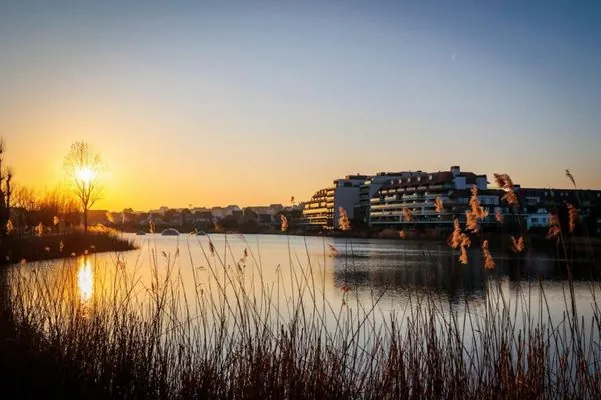

PLATE 01 / IX

Façade and casino-boulevard frontage. The 1930s landmark reopened in 2023 following Glenn Sestig's design overhaul.
★★★★★ Superior · Albertstrand
La Réserve
A 1930s grand hotel reborn — eucalyptus, onyx marble, Art Deco bar.
ArchitectGlenn Sestig · 2023 reno
Period1930s landmark
Rooms37
Taxi to Cuines 333–5 min
From— · high season
SettingOpposite casino
The Knokke landmark on the casino boulevard reopened in 2023 after architect Glenn Sestig restored it to a 1930s register: light-filled interiors in eucalyptus and onyx marble, an Art Deco bar with crystal sconces and red velvet banquettes [10]. Thirty-seven rooms, spa, indoor pool, La Rigue restaurant [9][19]. The most architecturally serious stay on the Belgian side, and under five minutes by taxi to Cuines 33.